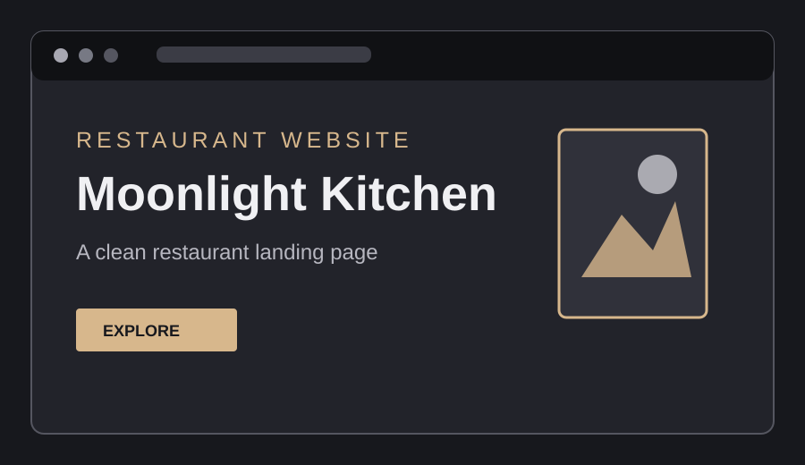
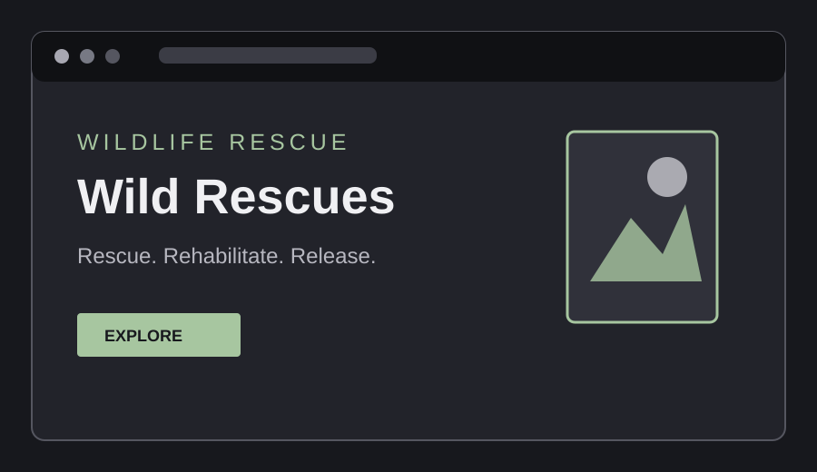
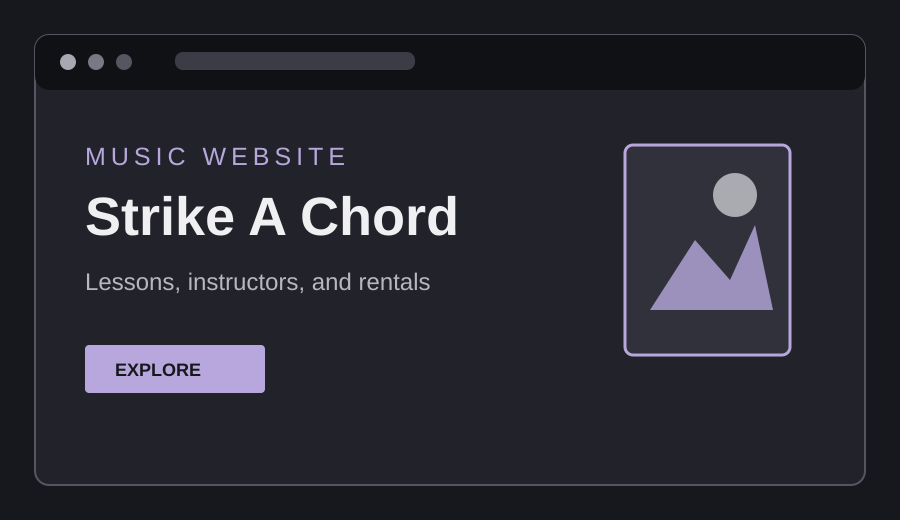

HTML & CSS
Practiced semantic HTML, CSS layouts, responsive design, navigation, forms, tables, images, and visual styling.
HTML5 · CSS3 · Responsive Design
SOFTWARE DEVELOPMENT STUDENT
I am developing my skills in web design and software development through hands-on coursework, personal projects, and continuous learning.
Learning. Building. Improving.
GET TO KNOW ME
I am a Software Development student at Ranken Technical College, where I began my studies in August 2026. I am working toward my expected graduation in 2028 and building a strong foundation in programming, web development, and problem-solving.
My current learning includes HTML, CSS, JavaScript, C#, and Bootstrap. I enjoy creating responsive websites, improving page layouts, and finding solutions when code does not work as expected.
I am looking for an internship or part-time opportunity where I can gain practical experience, contribute to a team, and continue expanding my technical knowledge. I am open to learning new languages, tools, and technologies as I grow as a developer.
WHAT I'M LEARNING
These skills reflect my current learning and coursework. I am continuing to practice and develop each skill through projects.
EDUCATION & EXPERIENCE
AUGUST 2026 – EXPECTED 2028
Studying software development with a focus on programming fundamentals, web technologies, responsive design, and practical project development.
TECHNICAL PROJECT EXPERIENCE
Created responsive websites using HTML5, CSS3, JavaScript, and Bootstrap. Practiced page structure, navigation, forms, styling, accessibility basics, and debugging.
CAREER OBJECTIVE
Seeking an opportunity to apply classroom knowledge, gain real-world experience, learn from experienced developers, and continue building technical skills.
WHAT I'VE BEEN STUDYING
My coursework gives me opportunities to practice the development process, apply new concepts, and build projects that demonstrate my progress.
Practiced semantic HTML, CSS layouts, responsive design, navigation, forms, tables, images, and visual styling.
HTML5 · CSS3 · Responsive Design
Learning how to use JavaScript to add interaction, respond to user actions, and make web pages more dynamic.
JavaScript · DOM · Events
Practiced using Bootstrap components and responsive grid layouts to create pages that adapt to different screen sizes.
Bootstrap · HTML · CSS
Building programming knowledge in C#, including the fundamentals needed to create and understand software applications.
C# · Programming Fundamentals
SELECTED WORK
These projects represent my web development coursework and the skills I am continuing to build. Replace the preview images and placeholder links with your final project screenshots and GitHub repositories.

COURSEWORK PROJECT
A restaurant landing page created to practice organizing business information, creating navigation, and presenting content in a clean layout.
Technologies: HTML5, CSS3
Challenge: Keeping the page simple while making the content easy to scan.
Solution: Organized the page into clear sections and used consistent spacing, typography, and colors.

COURSEWORK PROJECT
A wildlife rescue website designed to share information about rescue, rehabilitation, and release efforts.
Technologies: HTML5, CSS3
Challenge: Presenting several types of information while keeping the site readable on mobile devices.
Solution: Used responsive layouts, clear navigation, images, and organized content sections.

COURSEWORK PROJECT
A music-themed website created to organize lesson, instructor, rental, and contact information.
Technologies: HTML5, CSS3, JavaScript
Challenge: Making multiple pages feel consistent and easy to navigate.
Solution: Reused a consistent header, navigation, page structure, and stylesheet.
LET'S CONNECT
Connect with me and view my code as I continue learning and building projects.
GET IN TOUCH
I am interested in internship and part-time opportunities where I can learn, contribute, and grow as a developer.
This form area is ready for your Jotform embed. Create a form in Jotform, set its notifications to email you, and replace the placeholder below.
Jotform setup needed: Replace the form ID in this section with your real Jotform form ID.
Create a Jotform accountProfessional email: YOUR-EMAIL-ADDRESS